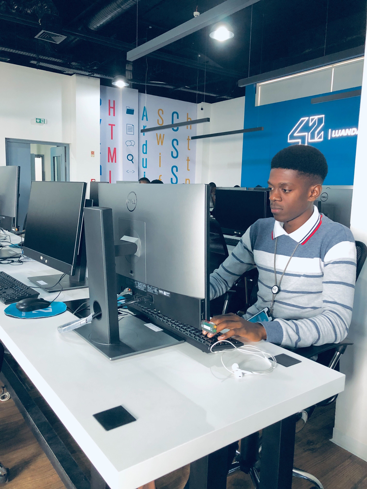

Arilson Albano
Formação Média Técnica em Informática de Gestão. Estudante de Engenharia de Software na 42 Luanda. Atualmente atuando como desenvolvedor Front-End, com foco em tecnologias como HTML, CSS e JavaScript, criando interfaces modernas, funcionais e centradas na experiência do utilizador. Tenho interesse em desenvolvimento web e mobile, buscando constantemente aprimorar minhas habilidades na construção de aplicações responsivas, intuitivas e eficientes. Apaixonado por tecnologia e comunicação, procuro não apenas desenvolver soluções, mas também transmitir ideias de forma clara, criativa e impactante.